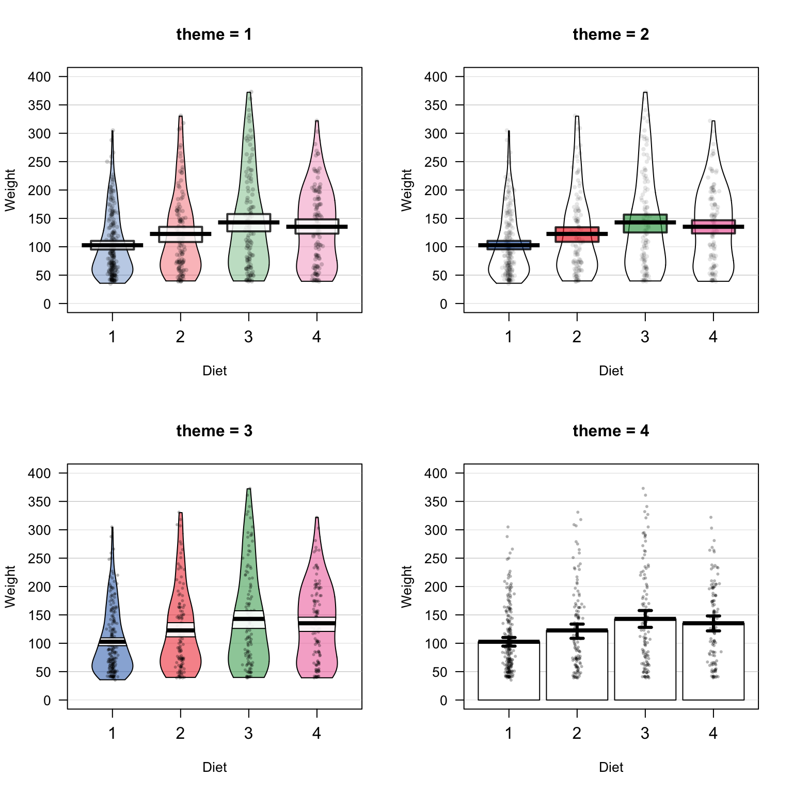
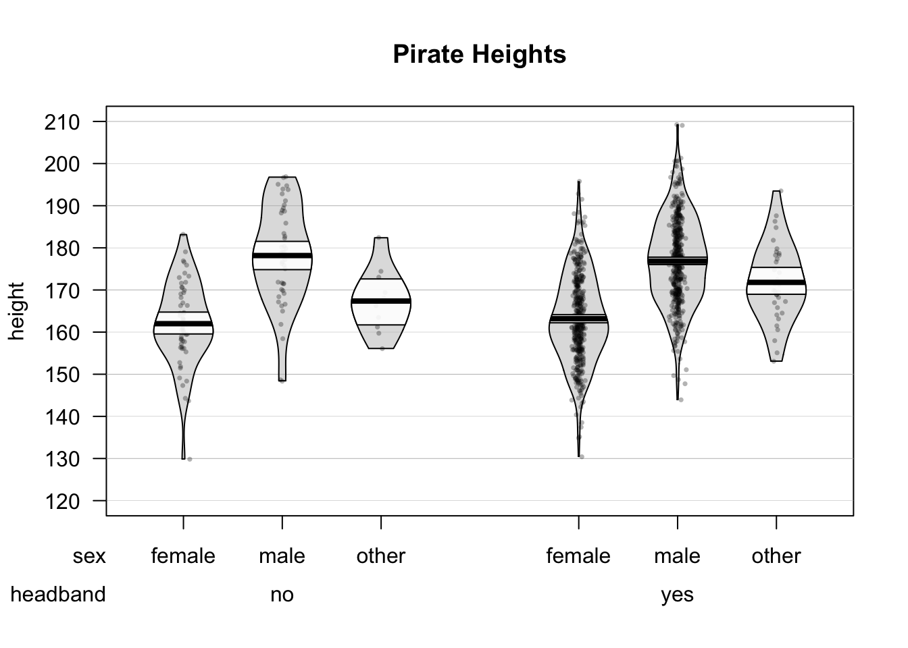
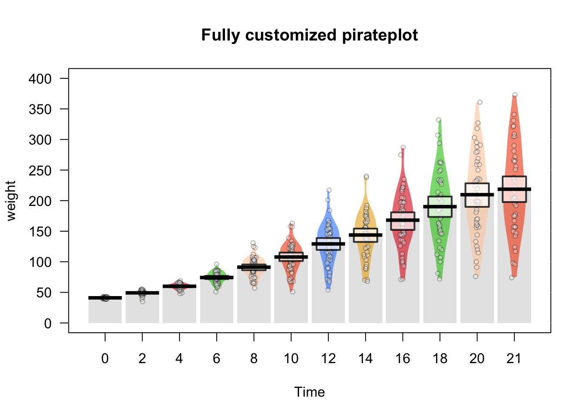
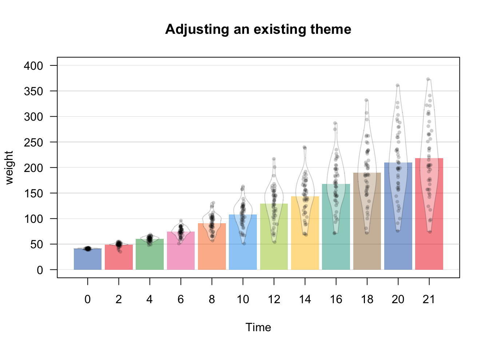
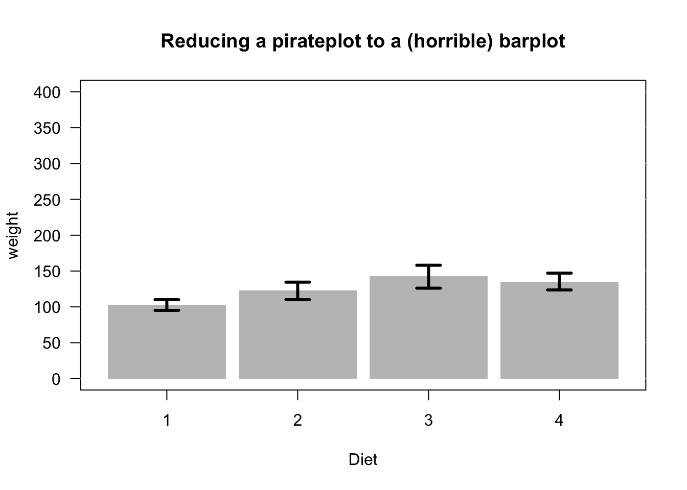
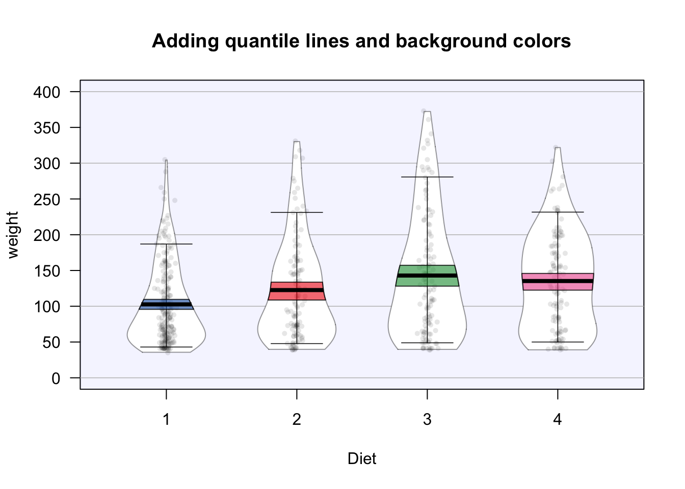
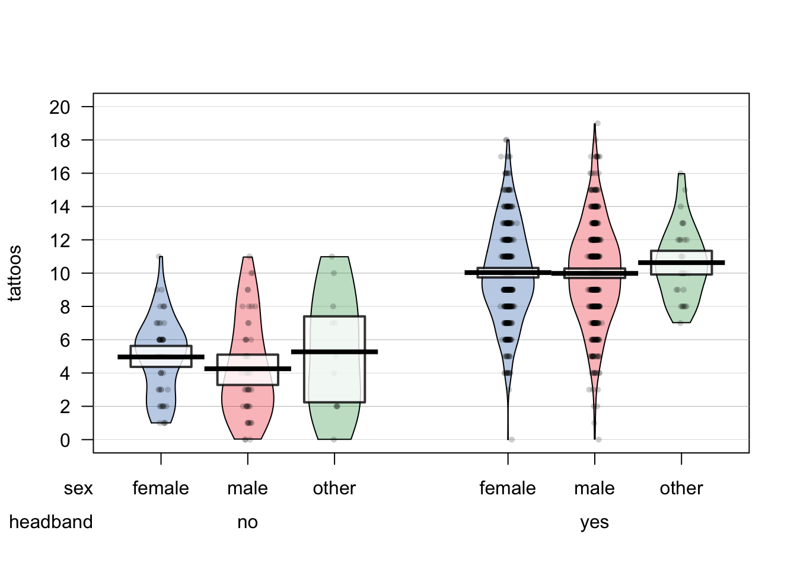

11.6 pirateplot()
| Argument | Description |
|---|---|
formula |
A formula specifying a y-axis variable as a function of 1, 2 or 3 x-axis variables. For example, formula = weight ~ Diet + Time will plot weight as a function of Diet and Time |
data |
A dataframe containing the variables specified in formula |
theme |
A plotting theme, can be an integer from 1 to 4. Setting theme = 0 will turn off all plotting elements so you can then turn them on individually. |
pal |
The color palette. Can either be a named color palette from the piratepal() function (e.g. "basel", "xmen", "google") or a standard R color. For example, make a black and white plot, set pal = "black" |
cap.beans |
If cap.beans = TRUE, beans will be cut off at the maximum and minimum data values |
A pirateplot a plot contained in the yarrr package written specifically by, and for R pirates The pirateplot is an easy-to-use function that, unlike barplots and boxplots, can easily show raw data, descriptive statistics, and inferential statistics in one plot. Figure 11.5 shows the four key elements in a pirateplot:
Figure 11.5: The pirateplot(), an R pirate’s favorite plot!
| Element | Description |
|---|---|
| Points | Raw data. |
| Bar / Line | Descriptive statistic, usually the mean or median |
| Bean | Smoothed density curve showing the full data distribution. |
| Band | Inference around the mean, either a Bayesian Highest Density Interval (HDI), or a Confidence Interval (CI) |
The two main arguments to pirateplot() are formula and data. In formula, you specify plotting variables in the form y ~ x, where y is the name of the dependent variable, and x is the name of the independent variable. In data, you specify the name of the dataframe object where the variables are stored.
Let’s create a pirateplot of the ChickWeight data. I’ll set the dependent variable to weight, and the independent variable to Time using the argument formula = weight ~ Time:
yarrr::pirateplot(formula = weight ~ Time, # dv is weight, iv is Diet
data = ChickWeight,
main = "Pirateplot of chicken weights",
xlab = "Diet",
ylab = "Weight")
11.6.1 Pirateplot themes
There are many different pirateplot themes, these themes dictate the overall look of the plot. To specify a theme, just use the theme = x argument, where x is the theme number:



For example, here is a pirateplot height data from the pirates dataframe using theme = 3. Here, I’ll plot pirates’ heights as a function of their sex and whether or not they wear a headband. I’ll also make the plot all grayscale by using the pal = "gray" argument:
yarrr::pirateplot(formula = height ~ sex + headband, # DV = height, IV1 = sex, IV2 = headband
data = pirates,
theme = 3,
main = "Pirate Heights",
pal = "gray")
11.6.2 Customizing pirateplots
Regardless of the theme you use, you can always customize the color and opacity of graphical elements. To do this, specify one of the following arguments. Note: Arguments with .f. correspond to the filling of an element, while .b. correspond to the border of an element:
| element | color | opacity |
|---|---|---|
| points | point.col, point.bg | point.o |
| beans | bean.f.col, bean.b.col | bean.f.o, bean.b.o |
| bar | bar.f.col, bar.b.col | bar.f.o, bar.b.o |
| inf | inf.f.col, inf.b.col | inf.f.o, inf.b.o |
| avg.line | avg.line.col | avg.line.o |
For example, I could create the following pirateplots using theme = 0 and specifying elements explicitly:
pirateplot(formula = weight ~ Time,
data = ChickWeight,
theme = 0,
main = "Fully customized pirateplot",
pal = "southpark", # southpark color palette
bean.f.o = .6, # Bean fill
point.o = .3, # Points
inf.f.o = .7, # Inference fill
inf.b.o = .8, # Inference border
avg.line.o = 1, # Average line
bar.f.o = .5, # Bar
inf.f.col = "white", # Inf fill col
inf.b.col = "black", # Inf border col
avg.line.col = "black", # avg line col
bar.f.col = gray(.8), # bar filling color
point.pch = 21,
point.bg = "white",
point.col = "black",
point.cex = .7)
If you don’t want to start from scratch, you can also start with a theme, and then make selective adjustments:
pirateplot(formula = weight ~ Time,
data = ChickWeight,
main = "Adjusting an existing theme",
theme = 2, # Start with theme 2
inf.f.o = 0, # Turn off inf fill
inf.b.o = 0, # Turn off inf border
point.o = .2, # Turn up points
bar.f.o = .5, # Turn up bars
bean.f.o = .4, # Light bean filling
bean.b.o = .2, # Light bean border
avg.line.o = 0, # Turn off average line
point.col = "black") # Black points
Just to drive the point home, as a barplot is a special case of a pirateplot, you can even reduce a pirateplot into a horrible barplot:
# Reducing a pirateplot to a (at least colorful) barplot
pirateplot(formula = weight ~ Diet,
data = ChickWeight,
main = "Reducing a pirateplot to a (horrible) barplot",
theme = 0, # Start from scratch
pal = "black",
inf.disp = "line", # Use a line for inference
inf.f.o = 1, # Turn up inference opacity
inf.f.col = "black", # Set inference line color
bar.f.o = .3) 
There are many additional arguments to pirateplot() that you can use to complete customize the look of your plot. To see them all, look at the help menu with ?pirateplot or look at the vignette at
| Element | Argument | Examples |
|---|---|---|
| Background color | back.col | back.col = 'gray(.9, .9)' |
| Gridlines | gl.col, gl.lwd, gl.lty | gl.col = 'gray', gl.lwd = c(.75, 0), gl.lty = 1 |
| Quantiles | quant, quant.lwd, quant.col | quant = c(.1, .9), quant.lwd = 1, quant.col = 'black' |
| Average line | avg.line.fun | avg.line.fun = median |
| Inference Calculation | inf.method | inf.method = 'hdi', inf.method = 'ci' |
| Inference Display | inf.disp | inf.disp = 'line', inf.disp = 'bean', inf.disp = 'rect' |
# Additional pirateplot customizations
pirateplot(formula = weight ~ Diet,
data = ChickWeight,
main = "Adding quantile lines and background colors",
theme = 2,
cap.beans = TRUE,
back.col = transparent("blue", .95), # Add light blue background
gl.col = "gray", # Gray gridlines
gl.lwd = c(.75, 0),
inf.f.o = .6, # Turn up inf filling
inf.disp = "bean", # Wrap inference around bean
bean.b.o = .4, # Turn down bean borders
quant = c(.1, .9), # 10th and 90th quantiles
quant.col = "black") # Black quantile lines
11.6.3 Saving output
If you include the plot = FALSE argument to a pirateplot, the function will return some values associated with each bean in the plot. In the next chunk, I’ll

# Save data from the pirateplot to an object
tattoos.pp <- pirateplot(formula = tattoos ~ sex + headband,
data = pirates,
plot = FALSE)Now I can access the summary and inferential statistics from the plot in the tattoos.pp object. The most interesting element is $summary which shows summary statistics for each bean (aka, group):
# Show me statistics from groups in the pirateplot
tattoos.pp
## $summary
## sex headband bean.num n avg inf.lb inf.ub
## 1 female no 1 55 5.0 4.3 5.5
## 2 male no 2 47 4.3 3.2 5.0
## 3 other no 3 11 5.3 2.5 7.2
## 4 female yes 4 409 10.0 9.8 10.3
## 5 male yes 5 443 10.0 9.7 10.3
## 6 other yes 6 35 10.6 9.9 11.4
##
## $avg.line.fun
## [1] "mean"
##
## $inf.method
## [1] "hdi"
##
## $inf.p
## [1] 0.95Once you’ve created a plot with a high-level plotting function, you can add additional elements with low-level functions. For example, you can add data points with points(), reference lines with abline(), text with text(), and legends with legend().